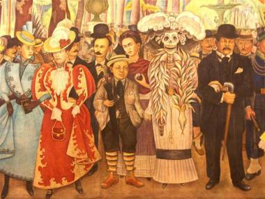

El Día de Muertos es una celebración mexicana de origen mesoamericano1 que honra a los difuntos el 2 de noviembre, comienza desde el 1 de noviembre, y coincide con las celebraciones católicas de Día de los Fieles Difuntos y Todos los Santos.
El culto a la muerte en México no es algo nuevo, pues ya se practicaba desde fechas próximas al año 1800 a.C.
Así mismo, en el calendario mexica que se localiza en el Museo de Antropología, se puede observar que entre
los 18 meses que forman este calendario, había por lo menos 6 festejos dedicados a los muertos.
Los evangelizadores cristianos de tiempos coloniales aceptaron en parte las tradiciones de los antiguos pueblos
mesoamericanos para poder implantar el cristianismo entre dichos pueblos.
El festival que se convirtió en el Día de Muertos se conmemoraba el noveno mes del calendario solar mexica,
cerca del inicio de agosto, y se celebraba durante un mes completo. Las festividades eran presididas por la
diosa Mictecacíhuatl, conocida como la "Dama de la Muerte" (actualmente relacionada con "la Catrina",
personaje de José Guadalupe Posada) y esposa de Mictlantecuhtli, Señor de la tierra de los muertos.
Las festividades eran dedicadas a la celebración de los niños y las vidas de parientes fallecidos.
La festividad del día de los muertos de divide en dos partes, la primera el día de todos los santos celebrada el 1 de
Noviembre y la del día de los muertos del día 2 de Noviembre:
Las familias pasan largas horas trabajando en el altar, muchos de estos altares son considerados verdaderas obras
de artes, ya que reflejan el trabajo, dedicación y creatividad de la gente para ofrecer un buen altar. Existen muchas
formas de realizar altares de muertos, la más sencilla la suele hacer mucha gente dentro de sus casas ya que sobre
una mesa cubierta con un mantel se pone una fotografía de la persona fallecida, y se adorna con flores y algunos
recuerdos.
Otros altares son realizados según la tradición, donde se establece que el altar debe de constar de 7 niveles o escalones que representan los 7 niveles
que tiene que pasar el alma de un muerto para poder descansar. Estos
altares se realizan generalmente en lugares donde exista un espacio grande donde pueda caber todo el altar, el cual
debe ser barrido el cuarto con hierbas aromáticas hacia los cuatro vientos un día antes del día de muertos. Primero
se construye o fabrica el esqueleto del altar ya sea con cajas de cartón, madera o lo que se encuentre a fin de que
queden bien cimentados los 7 niveles, de los cuales el séptimo debe de estar casi a la altura del suelo y sobre él
se pone el segundo nivel que es un poco más chico que el primero y así sucesivamente hasta llegar al primer nivel, cada
escalón es forrado con tela negra y blanca. Cada escalón tiene un significado y debe contener ciertos objetos en específico:
Las ofrendas que se ponen dentro del altar son las siguientes:
Los elementos que debe tener un altar son:
La Catrina fue creada por artistas mexicanos como una metáfora de la alta clase social mexicana anterior a la Revolución, es decir la de tiempos de Porfirio Díaz.
Después este esqueleto ataviado de elegantes y coloridas ropas, de señora de alta sociedad vestida para dar un paseo por la antigua Alameda Central, se hizo un símbolo de la Muerte en la celebración, el 1 y 2 de noviembre, del Dìa de los Muertos.
'La Catrina' puede mostrarse de muchas formas. Algunas veces se presenta alegre, vestida con la elegancia de comienzos del siglo pasado, deseosa de divertirse e incluso coqueta y seductora con los mortales.
Pero otras veces, es la 'huesuda' que en cualquier momento sólo se aparece para llevarnos de este mundo.
La relación que con ella se tiene está definida por circunstancias vinculadas con la historia y la cultura; en las tradiciones y costumbres de cada región se le considera un huésped imprescindible en la ocasiones importantes con los muertos, como el Día de Todos Santos y el dìa de los Fieles Difuntos.
La muerte y la memoria de nuestros seres queridos nos dan un sentido de identidad que a su vez arraiga nuestra cultura.
Algunos artistas plasmaron la imagen de La Catrina en grabados que la han hecho inmortal. Por ejemplo, Manuel Manilla, nacido en 1830 y muerto en 1895, es considerado el precursor de José Guadalupe Posada por sus caricaturas que incluyen personajes esqueléticos.
Pero quizá el más conocido de los grabadores sea precisamente Posada, quien naciera en Aguascalientes el 2 de febrero de 1852, y muriera en la Ciudad de México el 20 de enero de 1913.

Sueño de una tarde dominical en la Alameda Central, Diego Rivera.
Janitzio es una de las islas del lago de Pátzcuaro, ubicado en el Estado de Michoacán, México.
Su nombre tiene varios significados, entre ellos: "Lugar donde llueve", "Cabellos de elote", y "Lugar de Pesca".
Janitzio es famosa por la gran cantidad de turismo que recibe, proveniente tanto de México como de todo el mundo.
En lo alto de la isla, observable desde lo lejos, existe un monumento del héroe nacional de la revolución de
independencia (con su brazo derecho alzado y su puño cerrado), José María Morelos y Pavón. Este monumento
contiene en su interior una colección de pinturas que describen la biografía del héroe mexicano. Existe un mirador
en la estructura en el puño del monumento donde se puede admirar todo los alrededores de la isla así
como gran proporción del lago de Pátzcuaro.El 1 de noviembre tiene lugar en la isla una ceremonia muy querida
para sus habitantes. Durante la noche es costumbre llevar las ofrendas a los muertos.
Se hace una procesión iluminada con cirios y animada con cánticos religiosos. Toda la isla resplandece con luces y antorchas.
Alrededor del lago existen unos cuantos pueblos purépechas:
Huaquechula es el nombre de un municipio que se localiza en la parte centro oeste del Estado de Puebla,
dentro de la región de San Pedro Cholula, en México; también es el nombre de la cabecera municipal del mismo.
El municipio cuenta con diferentes monumentos, entre ellos está el Ex-convento de Huaquechula, que data del siglo
XVI cuando arribaron las primeras órdenes religiosas a la Nueva España. Este convento fue establecido por los
franciscanos, que llegaron en 1530 a la zona y con la ayuda de los indígenas empezaron su construcción en 1531,
misma que terminaron hasta 1580 cuando quedó en manos de Fray Juan de Alameda.
Otro punto de interés es el zócalo, en el centro de Huaquechula, sitio que muestra el paso del tiempo a través del lugar.
La Piedra Máscara, ubicada en el antiguo camino a San Juan Vallarta, es un momento irregular que representa una
deidad de los antiguos habitantes de Huaquechula. La Piedra del Coyote, en el ascenso del río hacia el Potrero
de Xonaca, parece representar la muerte de un coyote que merodeaba por la región, posiblemente labrada por
antiguos pobladores prehipánicos. También está la Piedra del Sol y la Luna, en la misma zona que la Piedra del
Coyote, que muestra en una de sus caras un eclipse de luna, y se piensa que representa el éxodo de los antiguos
pobladores de la región hacia otros lugares como Cholula.
Además está la Casa de la Cultura llamada Cuauhquechollan, ubicada en la cabecera municipal, uno de
los principales atractivos culturales de la región.
Una de las fiestas más importantes es el Día de Muertos, fecha en que se dedican las famosas ofrendas a
los seres queridos que han muerto durante ese año. En estos altares se colocan varios objetos representativos de la
celebración y del difunto, como su comida favorita, la cual, según la creencia, el difunto vendrá a probar durante
la noche. Lo más común es colocar mole, hojaldras (el pan típico de este feriado), dulces, fruta, chocolate y atole.
También se suelen colocar reliquias u objetos personales del difunto, y una cruz con la imagen de algún santo.
Año con año el pueblo de Huaquechula es visitado por turistas de diferentes partes de México y el mundo por sus
tradicionales Ofrendas Monumentales.
Estas ofrendas están consideradas como Patrimonio Cultural de los poblanos. Durante el 1 y 2 de noviembre
quienes perdieron a familiares durante el último año montan grandes ofrendas para recibir a sus muertos, es cierto
que en casi todas las casas esperan a los fieles difuntos, pero son sólo las Ofrendas Monumentales las que
pueden ser visitadas por los turistas.
Las ofrendas son de todas formas y colores y su tamaño depende de la situación económica de la familia del difunto.
Las familias que presentan las Ofrendas Monumentales preparan chocolate para recibir a las personas que visitan sus casas,
el cual es acompañado con pan tradicional de la región. No obstante también reciben a los visitantes
con atole, tamales y hasta pozole, depende mucho del estatus económico de la familia. Los visitantes se quedan
un rato a acompañar a la familia y siguen a la siguiente ofrenda, la tradición es visitar cada altar.
Esta es sin duda una de las más bellas tradiciones de esta región y que todo mexicano no debe dejar de visitar.
"Desfile de Calaveras"